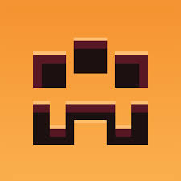

MINECRAFT DUNGEONS
O que é Minecraft Dungeons
Minecraft Dungeons é um videogame RPG de ação e aventura desenvolvido por Mojang Studios, Xbox Game Studios e Double Eleven. Foi lançado em 26 de maio de 2020, para Windows (via the Minecraft Launcher e para Microsoft Store), Xbox One, Nintendo Switch, e PlayStation 4, em 10 de novembro de 2020, para Xbox Series X|S, e em 22 de setembro de 2021, para o Steam para Windows.
Originalmente concebido como um jogo para o Nintendo 3DS, Minecraft Dungeons se inspira nos clássicos rastreadores de masmorras. Também apresenta músicas de Peter Hont, Johan Johnson, Samuel Åberg, Eugnosis, Rostislav Trifonov e Grant Kirkhope.
Em 28 de setembro de 2023, foi anunciado que 1.17.0.0 foi a última atualização do Minecraft Dungeons, mas ainda está disponível para download e parar jogar.
Disponibilidade
A Standard Edition do jogo foi lançado em 26 de maio de 2021
A Ultimate Edition do jogo lançado em 28 de julho de 2021 e inclui todos os seis DLCs junto com o conteúdo do Hero Pass. Uma versão física está programada para ser lançada em 26 de outubro de 2021.
O Ultimate DLC Bundle também lançado em 28 de julho de 2021 está disponível e inclui todos os seis DLCs junto com o conteúdo do Hero Pass, mas sem o jogo base.
Os pacotes DLC também estão disponíveis separadamente.
O jogo está disponível nas seguintes plataformas:
Windows: Minecraft Launcher - Microsoft Store - Steam
Xbox One/Series X|S
Nintendo Switch
PlayStation 4
Jogabilidade
O jogo suporta até quatro jogadores e apresenta várias novas armas, itens e mobs, bem como uma variedade de ambientes para explorar e uma missão abrangente que verá os jogadores enfrentarem um antagonista principal, chamado Arch-Illager.
O jogo tem missões específicas e localizações, juntamente com elementos gerados proceduralmente. O jogador não está restrito a uma classe e pode pegar mais armaduras ou armas e usá-las. Os jogadores não constroem ou exploram porque o jogo é focado em ação/aventura. O jogo se passa acima e abaixo do solo. Os jogadores podem jogar os níveis que venceram anteriormente.
Existe um campo "mundo do cubo" que ocorre em parte do nível do tutorial. O jogador não está restrito a uma classe e pode pegar mais armaduras ou armas e usá-las. Os jogadores não constroem ou exploram porque o jogo é focado em ação/aventura. O jogo se passa acima e abaixo do solo. Os jogadores podem reproduzir os níveis que venceram anteriormente. Existe um campo "mundo do cubo" que ocorre em parte do nível do tutorial, Costa calamar. Os níveis são gerados proceduralmente, e Mojang estava considerando usar sementes do mundo.
Os jogadores podem escolher seu avatar em uma variedade de peles fornecidas, com mais por vir como DLC pago. As peles do criador de personagens e as peles compradas no Minecraft vanilla não estarão disponíveis para uso nas Dungeons.
O jogo
Personagem
O personagem é a pessoa que o usuário controla no jogo. Ao criar um personagem, o usuário pode escolher uma skin cosmética que usará durante o jogo (observe que também é possível mudar a skin a qualquer momento na tela de seleção de personagem)
Ao criar um personagem, todos os itens, níveis e progresso ganhos permanecerão apenas nesse personagem e não serão transferidos para outros personagens criados pelo usuário.
Localizações
Ao iniciar o jogo pela primeira vez com um novo personagem, o jogador começará em costa calamar. Eles então progridem através de outras localizações, tais como o bosque dos creeper, até que eles tenham completado todos os níveis. Às vezes, um local pode gerar uma sala que permite o acesso a um local secreto, como cripta horripilante. Outros níveis podem ser acessados prosseguindo através dos níveis normalmente, como pastos de abóbora ou minas de redstone.
Itens
Armas são ferramentas e itens que podem ser usados para danificar entidades com ataques corpo a corpo ou à distância.
Armaduras é usado para proteger o jogador contra danos e fornecer aumento de estatísticas.
Artefatos são objetos que o jogador pode usar para ganhar um poder significativo, causar dano a inimigos ou curar aliados.
Inimigos
Existem três tipos de inimigos que o protagonista luta no jogo:
Criaturas

Mini Chefes
Chefes
Matar esses inimigos dá ao jogador experiência e eles geralmente jogam esmeraldas, consumíveis e itens.
Mapas do Minecraft Dungeons
Mapa da Área Continental
Mapa dos Reinos das Ilhas
Mapa de Outras Dimensões